Oracle Intelligent Bots Advanced Training - Lab 5c (Custom Components and the Conversation Message Model (CMM))
Oracle Intelligent Bots Advanced Training - Lab 5c (Custom Components and the Conversation Message Model (CMM))The Conversation Message Model (CMM) is a common metadata model for all user interface components in Oracle Intelligent Bots. In this lab, we'll build a custom component that uses the CMM model to render the flowers and bouquets menus.
 Prerequisites
Prerequisites
- Completion of lab 4a.
- A JavaScript IDE.
- ngrok running on your system.
- A local custom code test tools container started on your system.
 Prepare the Lab Environment
Prepare the Lab Environment
Before we get started with this lab, we'll need to put a few things into place.
- If you did not finish the previous lab, or if you just want to make sure you have a working version of the current state of the custom component service, then copy the contents of this lab's
resources/jsfolder and paste them to your custom component service, relacing the existing content. - If you did use the content from the lab's
resourcesfolder, restart the local container:omce-ccc >path to your custom component service toolsConfig.json file>/toolsConfig.json --debug
- Open the bot.
- Train the bot by clicking
 , leaving Trainer Ht selected, and clicking Submit.
, leaving Trainer Ht selected, and clicking Submit. - Click
 , select Development > Backends, open your backend, click the Settings tab and copy the following values to a temporary file:
, select Development > Backends, open your backend, click the Settings tab and copy the following values to a temporary file:
- Backend ID
- Anonymous Key
- Return to your bot and click
 in the bot's left navigation for the bot.
in the bot's left navigation for the bot. - Paste your backend's ID into the Backend ID field.
- Paste your backend's anonymous key into the Anonymous Key field.
- For the Metadata URL, copy the ngrok https URL of your local server and the append it with
/mobile/custom/advt24hrsflowerscss<Your Unique Initials>/components.The URL should look something like this:
https://53f550fa.ngrok.io/mobile/custom/advt24hrsflowerscssFN/components
- Click Reload.
- Switch to the dialog flow editor by clicking
 .
. - Navigate to the
orderBouquetstate to see the difference between this version of the bot and the last one you worked with.
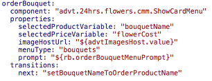
Notes on the Code Changes
- The
orderBouquetstate now references a custom component instead of the CR component it did before. The custom component takes five arguments that are configured for you already. TheselectedProductVariableattribute takes the name of the variable that should be updated by the custom component with the name of the selected product. Similarly theselectedPriceVariableattribute takes the name of a variable to write the price of the selected product to. - Since the training environment may change, the hostname of the server that holds the product images needs to be passed into the component. The
imageHostUrlattribute takes care of this. - The
menuTypeattribute takes a value of either"flowers"or"bouquets"to render the Flowers menu or the Bouquets menu, respectively. - If you look at the
orderFlowersstate further below in the dialog flow, then you'll see the exact same custom component configured, except with a value of"flowers".
We're all set. With these changes in place and the component service configuration pointing to your local component service project, we can now build the custom component. In the next section, we'll do some JavaScript coding.
 Build the Cards Layout Using the CMM Model
Build the Cards Layout Using the CMM Model
The MessageModel.js class in the Bot Custom Component SDK provides helper functions for component developers to build bot CMM responses easily in JavaScript. Knowing about how to work with the CMM model is an important skill to have In Oracle Intelligent Bots.
- Open the
advt24hrsflowerscss<YourUniqueInitials>project in your JavaScript IDE. - Open the
CardMenu.jsfile, which is located in thejs/components/flowermenu/cmmfolder. - Place your cursor below the
/* HANDS-ON START HERE */and add the following line for printing the prompt:conversation.reply(conversation.MessageModel().textConversationMessage(prompt));
PK: This line doesn't exist in the resource. I put the the line before the conversation.transition(); line
The
conversation.reply()function sends bot responses back to the client messenger (which,in the case of the labs so far, is the tester). The message object can be text, a raw payload object, attachment, cards and so on. You build message objects using the MessageModel.js class.The
textConversationMessagefunction prints the value of thepromptproperty, which is previously read-in by the custom component (see the screenshot for theorderBouquetstate in the previous section). - Next, to read data from the
FlowerServices.jsfile into an array, add the following code:var menuArray = menuitems[menuType]();
The
menuItemsconstant is defined at the top of theCardMenu.jsfile and loads a JSON object that simulates remote service calls.The
menuTypevariable that is passed as an argument holds the value of themenuTypecomponent property. The value is eitherflowersorbouquets.If you check the
FlowersServices.jsfile, you'll see that it exposes the following two functions for querying data:flowers()andbouquets(). - To start creating cards for each element contained in the array, add the following code to define a loop to iterate over:
var cards = []; for (var indx in menuArray) { } - Because every card in the card layout has a button for users to click on to purchase the product displayed on the card, we'll add the following code inside the
forloop:let button = conversation.MessageModel().postbackActionObject(menuArray[indx].title + " (" + menuArray[indx].price + "$)", null, { [selectedProductVariable]: menuArray[indx].title, [selectedPriceVariable]: menuArray[indx].price});To create action buttons, the
MessageModelclass exposes thepostbackActionObjectfunction. The function takes three arguments:- A label. In the code above, the label consists of the product name (
title) and the product price. - An (optional) image URL.
- A JSON object that describes the payload to be sent back to the custom component when the button is pressed by a user. In the sample, the information that is added to this payload is the product name and price as the values. The JSON object keys are the names of the variables that should later be updated with this information.
- A label. In the code above, the label consists of the product name (
- With the action button defined, next step is to define the card object. For this add the following code below the button creation code but still in the loop:
let cardObj = conversation.MessageModel().cardObject( menuArray[indx].title, menuArray[indx].description, imageHostUrl + menuArray[indx].image, null, [button]); cards.push(cardObj);The
MessageModelclass contains the functioncardObjectthat returns the card object.The
cardObjectfunction takes five arguments:- A title string that is displayed as the card header.
- A description shown as a second multi-line label on the card.
- An image URL for the card image.
- A URL that is displayed on the card and that, when the user clicks on it, opens the referenced content in a separate webview outside of the bot messenger. Unlike Instant Apps, there is no communication between the opened link and the bot. The URL is not used in this lab, so the value is set to
null. - An array of action objects. In this lab we only add a single postback action. However, you can add as many actions, even of different types (e.g. call action, location action, etc.), as you need.
- Save the file, which should by now look as shown in the image below:
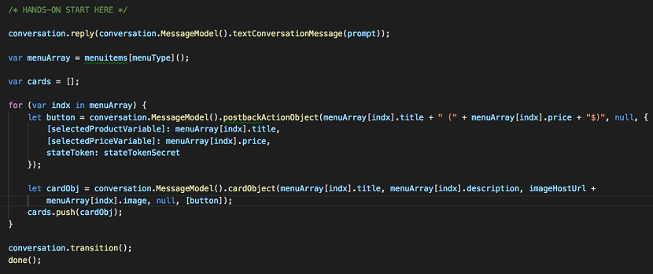
PK: need to update the screenshot to not show the stateToken: stateTokenSecret line
- Once the individual cards are created and added to the cards array you can now reply them to the bot for display using the following code outside the loop
var cardResponseMessage = conversation.MessageModel().cardConversationMessage('vertical', cards); conversation.reply(cardResponseMessage);The card layout is displayed to the bot using the
cardConversationalMessagefunction. The function takes two arguments: the print direction of the cards ('vertical'or'horizontal') and the array of cards.
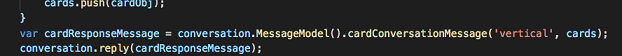If you tried the custom component as it is right now, you would see the Flowers or Bouquets menu displayed, but they wouldn't wait for user input.
The reason for this is its
conversation.transition()function, which all components use to inform the dialog engine to navigate to the next state. To make the component wait for user input, you need to comment out theconversation.transition()function. - Next, you add code that handles the component call back that is issued when a user clicks on a button to purchase a flower or bouquet. Create an
if-elsecondition and place the code that you've written so far in theelsecondition. See the image below for how this should look.
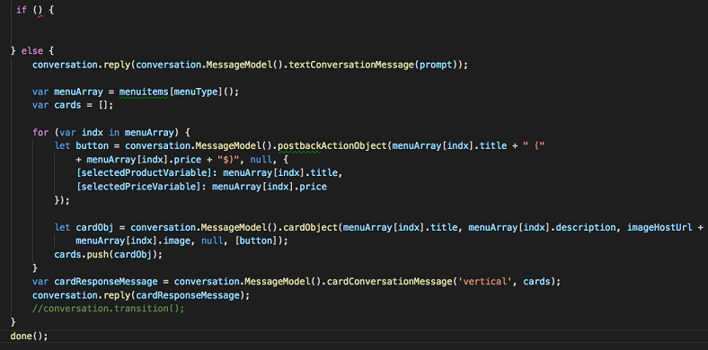 - The
ifcondition will be used to listen for and handle postback requests sent from the flowers or bouquets menu. Change the if-statement as shown below:if(conversation.postback())
If an incoming payload is a postback message, then calling the
postback()function returns the postback payload. If the message is not apostback()call, then the returned value isnull. Thus thepostback()call can be used to detect postback messages.Important: A postback call can come from another component. If, for example, the component that navigates to this custom component state issues a postback for that state, then this custom component tries to execute the payload. To ensure components only respond to their own postback messages, the custom component needs to track its state. For postback actions, the easiest way to handle state is to add a state token to the payload and to check for the token, which leads us to our next step.
- Add the following constant right above the
/* HANDS-ON START HERE */marker:const stateTokenSecret = "___24hrsflowersmenustatetracker___";
- Next, change the
ifstatement to the code shown below:if (conversation.postback() && conversation.postback().stateToken == stateTokenSecret)
This now only enters the if condition of the
stateTokenproperty if the postback payload matches the string in thestateTokenSecretconstant.So far however, the state token is not set in the payload of the postback action buttons set to the cards.
- Navigate to the
let button = conversation.MessageModel().postbackActionObjectdefinition you created earlier in the cards loop. - Change the payload of the postback to include the state token as shown in the image below:
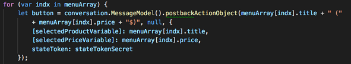 - Save the changes.
- Go back to the
ifcondition and add the following code to its body:let postbackpayload = conversation.postback(); conversation.variable([selectedProductVariable], postbackpayload[selectedProductVariable]); conversation.variable([selectedPriceVariable], postbackpayload[selectedPriceVariable]); conversation.keepTurn(true); conversation.transition(); done();The code starts with reading the postback message which is a JSON object. It the calls
conversation.variable(name,value)to populate the context variables referenced in theselectedProductVariableandselectedPriceVariableproperties with the values of the selected product.It the calls
conversation.keepTurn(true)so the dialog engine doesn't wait for any additional user input before transitioning to the next state. Thedone()function the returns control to the SDK to hand over to the bot. - Save your work.
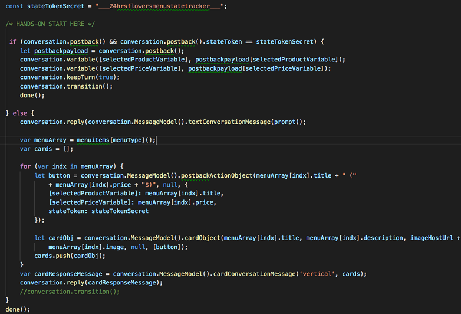
Note: The resources folder for this lab contains a file called secret_escape.txt that contains the complete code of this custom component.
 Test the Component
Test the Component
It's time to take the custom component on a test run.
- Restart the local container:
omce-ccc >path to your custom component service toolsConfig.json file>/toolsConfig.json --debug
- In AMCe, open the bot and switch to the dialog flow editor by clicking .
- Open the tester (
 ), type
), type Hiin the Message field, and click Send. - Try the flowers flow up to where the menu appears.
The menu should appear like in the image below.
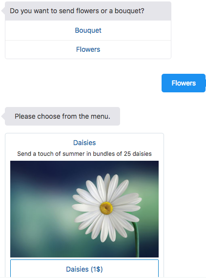 - Press one of the action buttons.
This should lead to the question of how may items you want to order for the specified product.
- In the tester, expand the JSON node:
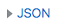 - Press one of the action buttons.
- Scroll down and search for
flowersNameandflowersCost, which are the two variables updated by the custom component.You will find occurences of the two names in the postback JSON payloads and the actual variables.
Note: If your component doesn't work, try to use the debugger in your JavaScript IDE to get down to the problem. (One goal of this lab to practice getting through debugging!)
Extra Credit!
You may have noticed that the menus don't provide options for pagination like the CR implementation did. If you read up on the CMM model, which basically entails looking at the MessageModel.js file sources, you'll learn that you can define global buttons for a response.
So, with a wink, we'll leave the implementation of pagination something for you to try in your spare time.
 Test Again
Test Again
We have tested the Flowers and Bouquets menus following the path of inexperienced users. Now let's test in expert mode.
- Go back to the tester and type
I like to order 12 red roses. - Select OrderFlowers.
The Flower menu shows as expected. As expected? No. As all the information is contained in the user natural language entry, the menu should be suppressed.
- In the tester, click the Reset button.
- Type
I like to order a box of tulips. - Select OrderFlowers.
Again, the menu appears when it shouldn't.
Why is that? The custom component does not implement entity slotting.
What we're going to do: We'll set up entity slotting outside of the custom component. While entity slotting can be built in to custom components for value list entities, we're going to go with a more generic approach that works for any component.
 Implement Entity Slotting for the Bouquets Menu
Implement Entity Slotting for the Bouquets Menu
Custom components are hosted on remote servers and don't have direct access to the bot intent engine. This makes it hard for custom components to implement entity slotting for entities other than value list entities. A more generic approach is to handle entity slotting outside of the custom component, which then also works for any entity type.
Let's implement this approach for the Bouquets menu.
- In your bot, switch to the dialog flow editor by clicking .
- Click the + Components button.
- Select the Control category.
- Select the Switch option.
- In the Insert After select list, select switchOrderType.
- Toggle the Remove Comments switch to ON.
- Click Apply
- Go to the newly added
switchstate above theorderBouquetstate. - Rename the
switchstate tobouquetsEntitySlotting. - Delete the
variableproperty. - Edit the
sourceproperty and add the following expression as a single line:"<#if iResult.value?has_content><#if iResult.value.entityMatches.Bouquets? has_content>slotEntity<#else>orderBouquet</#if><#else>orderBouquet</#if>"
- Rename the
option1value toorderBouquet. - Rename
option2value toslotEntity. - Rename the
option1action toorderBouquet. - Rename the
option2action toslotEntity. - Assign a value of
"orderBouquet"to theorderBouquetaction. - Assign a value of
"slotBouquetEntity"to theslotEntityaction. - Set the
NONEaction toorderBouquetas well.The component state should now look like this:
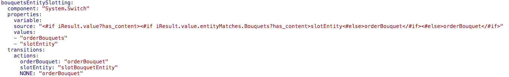The
System.Switchcomponentsourceproperty allows expressions to be compared to defined values. The expression you added to this property checks if theiResultvariable has content, which only is the case if the flow has previously passed theSystem.Intentcomponent, and if it has, if the content contains a value for the Bouquets entity. If so, then the expression returns a value of"slotEntity", which basically leads to the Bouquets menu not being displayed. In this case, however, navigation needs to go to a state that reads the entity value from theiResultvariable to save it into thebouquetNamevariable. - Click the + Components button again.
- Select Variables.
- Select Set variable.
- Select orderBouquet in the Insert After field.
- Click Apply.
- Rename the
setVariablestate toslotBouquetEntity. - Set the
System.SetVariablevariableproperty value tobouquetName. - Set the
valueproperty value to"${iResult.value.entityMatches.Bouquets[0]}". - Add the following
transitionselement to theslotBouquetEntitystate:transitions: next: "setBouquetNameToOrderProductName"The result should look like what's shown in the screenshot below:
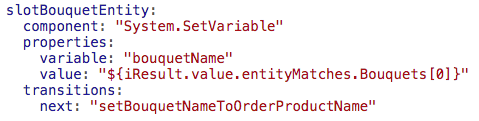 - Navigate to the
switchOrderTypestate and change theBouquetactionvalue fromorderBouquettobouquetsEntitySlotting. - As a last change, navigate to the
checkFlowerBouquetEntitystate and change theorderBouquetactionvalue tobouquetsEntitySlotting. - Validate the dialog flow.
- Open the tester.
- Type
I like to order a box of tulips. - Select
OrderFlowers.If you've configured everything correctly, you should see a result similar to what is shown in the image below:
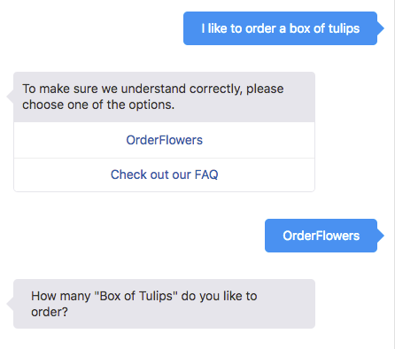
Entity slotting now works for the Bouquet menu. Unfortunately, it works for a single value only. The bouquet menu rendered by the custom component sets two values: the bouquetName and the cost. The latter is not implemented in the above entity slotting as the price information is not available in OBotML anymore. (We now have it hidden away in the custom component implementation.) This however can be handled with a second custom component that takes the product name (or product ID in real world implementations) as an input to query the price and set it to a variable in the dialog flow context.
 Implement Entity Slotting for the Flowers Menu
Implement Entity Slotting for the Flowers Menu
The steps for implementing entity slotting for the Flowers menu are almost exactly the same as the steps from the previous section. Completing these steps for the Flowers menu is recommended, but optional.
If you decide not to implement this part of the lab, please jump straight to the very important last section of this lab.
If you don't want to implement entity slotting for the Flowers menu yourself but would like to see it in action, go ahead and clone, configure, and run adtv24hrsflowers_bot6.
To implement slotting for the Flowers menu.
- In your bot, switch to the dialog flow editor by clicking .
- Click the + Components button.
- Select the Control category.
- Select the Switch option.
- In the Insert After select list, select setBouquetNameToOrderProductName.
- Toggle the Remove Comments switch to ON.
- Click Apply
- Go to the newly added
switchstate above theorderBouquetstate. - Rename the
switchstate toflowersEntitySlotting. - Delete the
variableproperty. - Edit the
sourceproperty and add the following expression as a single line:<#if iResult.value?has_content><#if iResult.value.entityMatches.Flowers? has_content>slotEntity<#else>orderFlowers</#if><#else>orderFlowers</#if>"
- Change
value1toorderFlowers. - Change
value2toslotEntity. - Rename the
option1action toorderFlowers. - Rename the
option2action toslotEntity. - Assign a value of
"orderFlowers"to theorderFlowersaction. - Assign a value of
"slotFlowersEntity"to theslotEntityaction. - Set the
NONEaction toorderFlowersas well.The component state should now look like this:
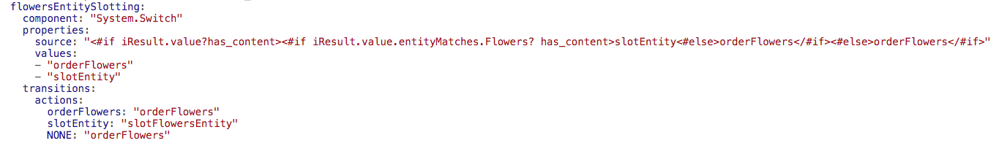 - Click the + Components button again.
- Select Variables.
- Select Set variable.
- Select orderFlowers in the Insert After field.
- Click Apply.
- Rename the
setVariablestate toslotFlowersEntity. - Set the
System.SetVariablevariableproperty value toflowersName. - Set the
valueproperty value to"${iResult.value.entityMatches.Flowers[0]}". - Add the following
transitionselement to theslotFlowersEntitystate:transitions: next: "setFlowerNameToOrderProductName"The result should look like what's shown in the screenshot below:
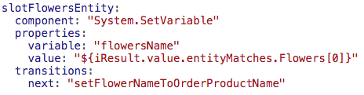 - Navigate to the
switchOrderTypestate and change theFlowersactionvalue fromorderFlowerstoflowersEntitySlotting. - As a last change, navigate to the
checkFlowerBouquetEntitystate and change theorderFlowersactionvalue toflowersEntitySlotting. - Validate the dialog flow.
- Open the tester.
- Type
I like to order 12 red roses. - Select
OrderFlowers.
 Get the Final Version of the Custom Component Service
Get the Final Version of the Custom Component Service
The labs that following this one heavily depend upon other custom components in this custom component service project. To make sure you have them in their latest and greatest state:
- Create a backup copy of your local custom component service project.
- Go to the
resources/finalfolder of this lab and copy thejsfolder. - In your working copy of your custom component service project, replace the existing
jsfolder with the one that you just copied. - Create a zip of the custom component service project (at its root folder).
- In AMCe, click and select Development > APIs.
- Open your custom API (advt24hrsflowerscss<YourUniqueInitials>).
- Select Implementation tab in the API designer.
- Upload the zip you just created to this page (by dragging it on to the page or by using the Upload an implementation archive link).
- Click the Test button (on the right upper side of the window).
- Make sure the GET metadata item is selected.
- As the Backend field value, select your backend name (
advt24hrsflowers<YourUniqueInitials>) and leave the version at1.0. - In the Authentication Method field, select Current User.
- Click the Test Endpoint button.
If you see an HTTP 200 response, the custom component service should be ready to use in the following labs.
Final Remarks on Layout Building
This lab demonstrated how to build layouts using the Conversation Message Model (CMM). Previously, in Lab 3b (Dialog Flow - Using the Common Response Component), you learned about using the CR component to declaratively create layouts directly within the dialog flow. Hopefully, the experience of working with both approaches has given you a better understanding of when to use which.